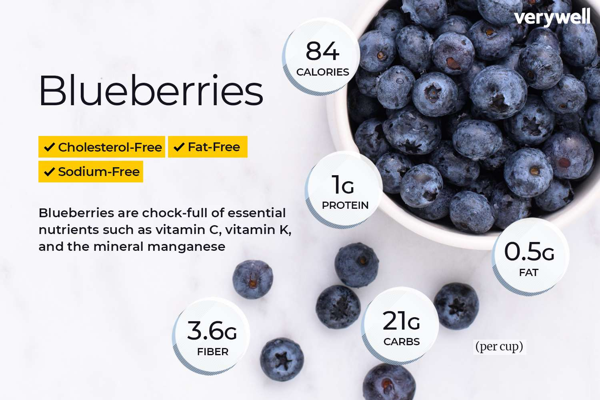

|
Blueberries!
|
|
Blueberries, small, round, and typically blue to purple in color,
are renowned for their sweet and mildly tart flavor. These berries
are highly nutritious, offering an abundance of antioxidants,
particularly anthocyanins, which give them their distinctive color.
They are also rich in vitamins C and K, and dietary fiber, and are
known for their numerous health benefits, including improved heart
health and brain function, and potential anti-diabetic effects.
|

|
|
In the culinary world, blueberries are celebrated for their
versatility. They can be enjoyed fresh, added to baked goods like
muffins and pies, or used in sauces and compotes. They are also a
popular addition to breakfast foods like pancakes, oatmeal, and
yogurt. In beverages, blueberries are often found in smoothies,
juices, and even cocktails, where their unique flavor and color are
highly appreciated. Moreover, due to their natural sweetness and
vibrant appearance, blueberries are a favorite in various desserts
and as a garnish for a wide range of dishes. Here are some of my
favorite recipes involving blueberries:
Blueberry Muffins
Blueberry Pie
Blueberry Smoothie
|


|
|
Their popularity extends beyond the kitchen, as they are also a
subject of interest in health and nutrition research due to their
antioxidant properties and potential health benefits.
|
|